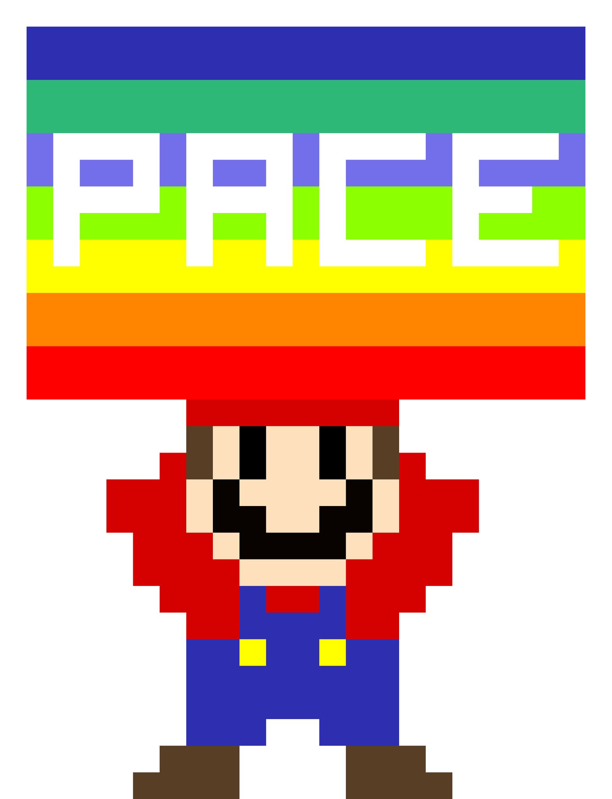

I am a patient person, precise and kind to everyone. At work I am cautious and good at computer work. I like to help people. I have several passions, for example video games, animated movies and pixel art drawings.
Strengths
I can accept defeat (mistakes) and I learn quickly.
Weaknesses
I get angry at people who don't listen or ignore me.
Presentation video
My drives, skills and stories

The LEGO Ramp
Through LEGO bricks I break down architectural barriers. Taking inspiration from an initiative born in Germany, I started to build ramps made only of LEGO bricks for stores and bars so that people in wheelchairs could access them. I also take care of collecting new bricks.

Pixel art
I use the program Pixilart to realize graphics composed by pixels. I do it for fun or to make useful posters for the cooperative where I work or for the promotion of the collection of LEGO bricks.

Scribus
I use the Scribus graphics program to make the weekly menus for the cooperative where I currently work.
My work experiences
-
since 2020:I work in the Talents Team of Riesco. Here I developed my skills in graphics. I learnt to use the programs Scribus and Pixilart. -
March to September 2019:Padova Eurospar -
2017 to 2018:Cleaner in Rubano